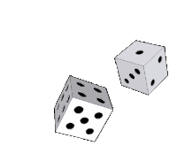
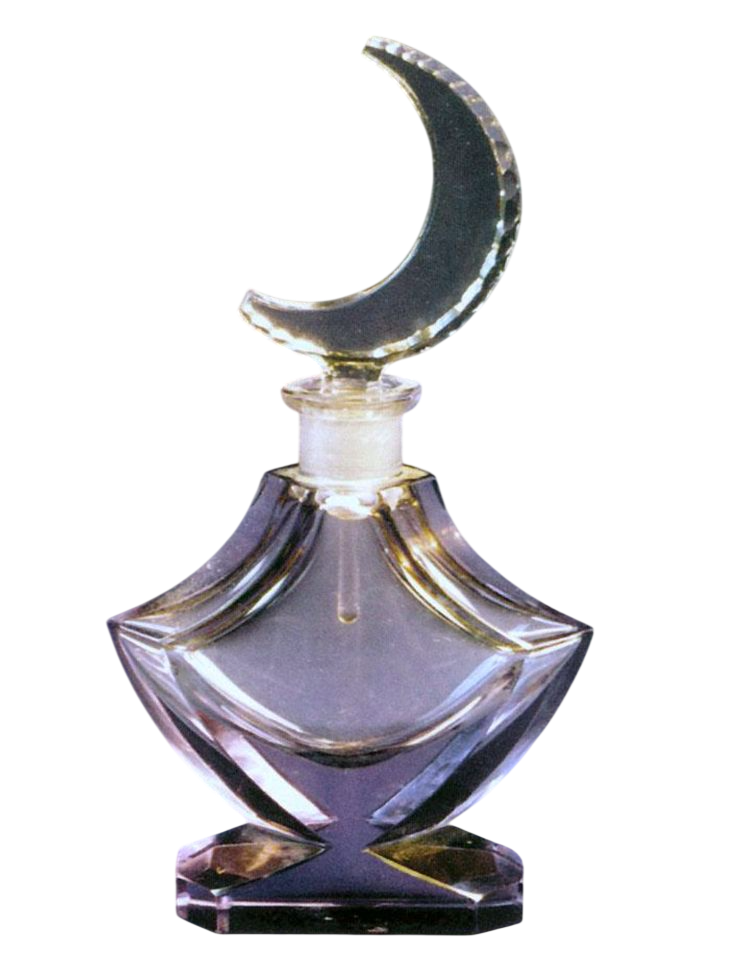
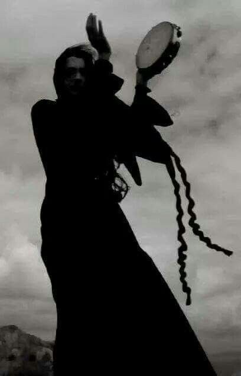
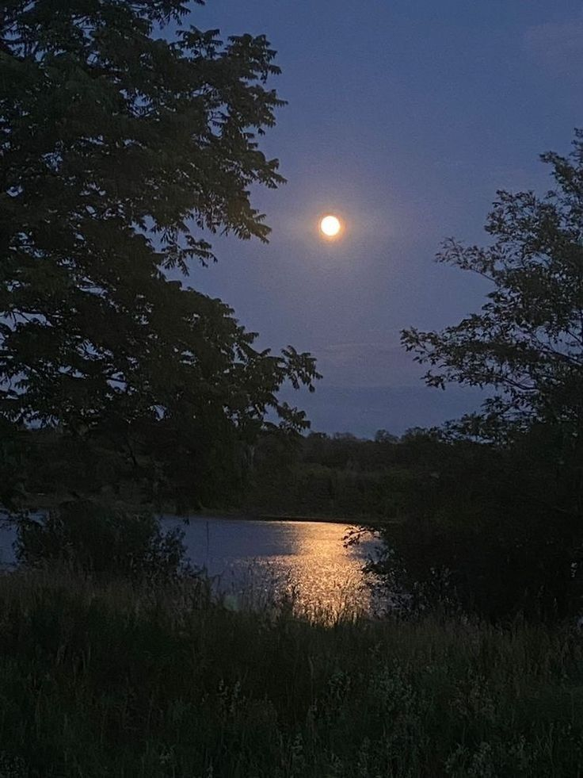

22A : 4-6 : Tu gardes ton ancrageLa femme te salue d'un sourire énigmatique et vous invite à la suivre vers une petite clairière cachée derrière les roseaux. Une nappe circulaire y a été installée. Des coussins sont disposés autour d'un autel rudimentaire où brûlent plusieurs bougies violettes.
- Ce soir c'est la Lune des Brumes, explique-t-elle en s'asseyant au centre du cercle. Une pleine lune en Scorpion. Le moment idéal pour regarder ce qui se cache sous la surface : les peurs, les secrets, et parfois les démons qui remontent...
Elle sort alors de sa poche quatre petites fioles de verre mauve, surmontées d'une délicate lune translucide.

- Buvez.
Personne ne proteste. Le liquide a un goût étrange de mûre, d'armoise et de métal. Quelques minutes plus tard, la vendeuse allume un fagot de sauge puis commence à battre lentement un tambour.
Poum.
Poum.
Poum.

Le rythme semble se synchroniser avec ton cœur. Peu à peu, les contours du monde deviennent flous. Tu vois une ville immense dont les rues sont pavées d'ossements blancs. Des silhouettes traversent les places publiques en retirant leur visage comme un masque. Sous leur peau se cachent d'autres peaux. Sous leurs sourires, d'autres bouches. Une femme ouvre sa poitrine et des papillons noirs s'en échappent. Une forêt pousse à l'intérieur d'un homme. Tu sens la peur essayer de t'atteindre. Mais tu te rappelles les paroles de ta mère : inspire, bloque, expire, et laisse la vague te submerger sans lutter.
Tu comprends soudain que les visions ne cherchent pas à te faire du mal. Elles montrent simplement ce qui est caché. Quand le tambour cesse enfin de résonner, tu as l'impression d'émerger d'un rêve.
Tu es secouée, mais étrangement calme. En quittant le lac, la pleine lune te suit du regard.
Tu te mets en route vers chez Emma avec une centaine de questions dans la tête.
